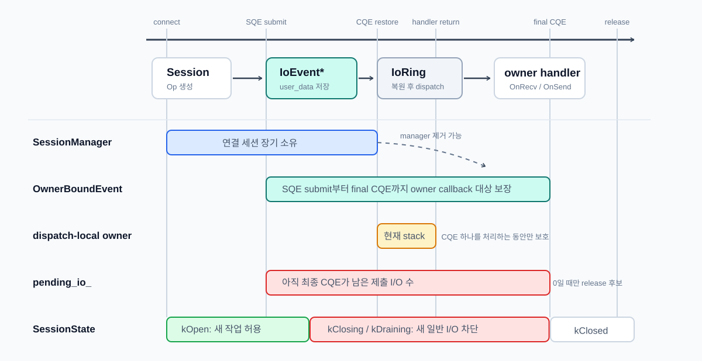
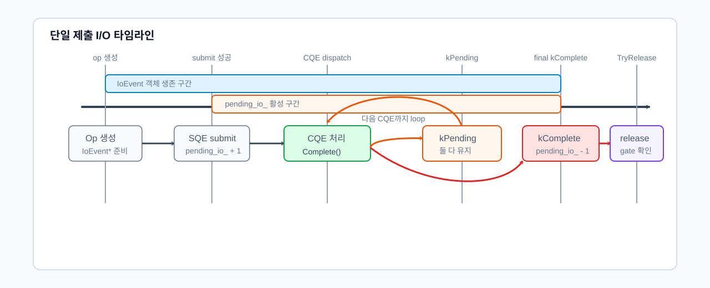
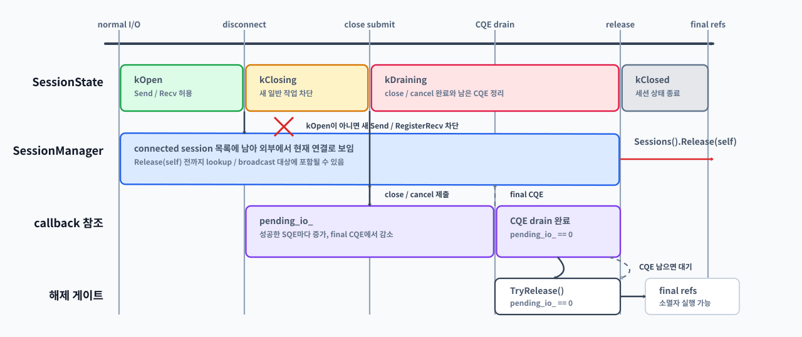

제출된 I/O와 콜백 대상 생존
클라이언트와 서버 간의 연결을 Session으로 관리하려고 하니 세션의 생존과 해제 조건이 명확하지 않다는 문제가 생겼습니다. 세션이 살아 있다는 말이 “세션이 연결 목록에 남아 있다”는 뜻인지, “이미 제출된 I/O의 CQE가 아직 돌아올 수 있다”는 뜻인지, “CQE 콜백을 실행하는 동안 콜백 대상이 파괴되지 않아야 한다”는 뜻인지가 서로 다르기 때문입니다. 그래서 세션 수명 관리 장치를 하나의 소유권 이야기로 합치는 것이 아니라, 각 장치가 보장하는 방식으로 수명 관리를 설계했습니다. *** ## 제출된 I/O와 콜백 대상 생존
SessionManager는 외부에서 세션을 “현재 연결된 세션”으로 취급하는 동안의 소유자입니다. 하지만 이것만으로는 이미 io_uring에 제출된 I/O의 CQE 콜백 대상 생존을 보장할 수 없습니다.
io_uring의 SQE user_data에는 제출된 I/O 하나를 대표하는 IoEvent*가 들어갑니다. CQE가 도착하면 IoRing은 그 포인터를 복원하고, 이벤트 객체의 Complete()를 호출합니다.

auto* ev = reinterpret_cast<IoEvent*>(data);
const auto dispatch_result = ev->Complete(result, flags);IoRing은 이 이벤트가 Session 작업인지, Listener 작업인지 알 필요가 없습니다. IoEvent::Complete() 안에서 operation 타입별 Dispatch()가 실행되고, RecvOp, SendOp, DisconnectOp, AcceptOp 같은 제출 이벤트가 자기 owner의 handler로 완료를 넘깁니다.
따라서 콜백 대상 생존은 SessionManager가 아니라 제출된 operation 객체가 보장합니다. SessionManager는 “현재 연결 목록”을 관리하고, 제출 이벤트는 “이미 커널에 제출된 I/O가 완료될 때까지 콜백 대상을 살려두는 책임”을 가집니다.
1 DispatchResult와 pending_io_
CQE를 처리한 뒤에는 두 가지를 따로 판단해야 합니다.
- 이번 CQE를 받은
IoEvent객체를 끝내도 되는지 - 세션 전체에서 아직 돌아오지 않은 제출 I/O가 남아 있는지

multishot 수신에서는 하나의 SQE가 여러 CQE를 만들 수 있습니다. 중간 CQE는 데이터를 하나 전달하지만, 같은 수신 제출은 계속 살아 있을 수 있습니다. 따라서 CQE 하나를 받았다고 해서 항상 제출 I/O 하나가 끝났다고 볼 수 없습니다.
이를 분리하기 위해 이벤트 콜백은 DispatchResult를 반환하고, 세션은 제출 I/O 단위로 pending_io_를 관리합니다.
| 경로 | CQE 의미 | DispatchResult |
pending_io_ 처리 |
|---|---|---|---|
| 단일 송신 완료 | 제출한 send 하나가 끝남 | kComplete |
감소 |
| 짧은 쓰기 | 같은 SendOp를 남은 바이트로 재제출 |
kPending |
재제출 성공 시 유지 |
| multishot 수신 중간 CQE | 같은 수신 제출이 계속 살아 있음 | kPending |
유지 |
| multishot 수신 최종 CQE | multishot 제출이 종료됨 | kComplete |
감소 |
| cancel/shutdown 완료 | 종료용 제출이 완료됨 | kComplete |
감소 |
kPending은 이벤트 객체가 아직 끝나지 않았다는 뜻입니다. multishot receive에서 IORING_CQE_F_MORE가 붙은 CQE가 대표적입니다. 같은 수신 SQE에서 CQE가 더 올 수 있으므로 이벤트 객체를 유지하고, pending_io_도 감소시키지 않습니다.
부분 send도 같은 이유로 kPending이 될 수 있습니다. CQE를 받은 뒤 같은 SendOp를 남은 바이트 범위의 새 send SQE에 다시 연결해야 하므로 이벤트 객체를 삭제하지 않습니다. 재제출이 성공하면 기존 제출 흐름을 유지하고, 재제출이 실패한 경우에만 CompletePendingIo()로 기존 제출분을 정리합니다.
kComplete는 이번 CQE 처리 뒤 이벤트 객체를 완료 처리할 수 있다는 뜻입니다. 단일 send 완료, cancel 완료, shutdown 완료, 또는 IORING_CQE_F_MORE가 없는 multishot 최종 CQE가 여기에 해당합니다.
2 종료 상태와 해제 조건
pending_io_는 이미 제출된 I/O가 남았는지만 셉니다. 하지만 종료가 시작된 세션이 새 수신, 송신, 등록 작업을 받아도 되는지는 별도의 상태 판단입니다.
SessionState |
의미 |
|---|---|
kOpen |
정상 송수신 가능 |
kClosing |
종료 시작, 새 일반 작업 차단 |
kDraining |
종료 관련 제출 이후 남은 CQE를 비우는 중 |
kClosed |
연결 종료 통지와 manager 해제 완료 |
종료 흐름은 “새 작업 차단 → 종료 관련 작업 제출 → 남은 CQE 비우기 → 한 번만 해제” 순서로 진행됩니다.

Disconnect()가 호출되면SessionState를kClosing으로 전환합니다.kOpen이 아니면 새 수신, 새 송신, 새 등록 작업을 차단합니다.- 이미 큐에 들어간 송신 데이터는 정책에 따라 폐기하거나, 종료 전에 drain할지 결정합니다.
- 취소,
shutdown, close 관련 정리처럼 커널 제출이 필요한 종료 작업을 등록합니다. - 제출에 성공한 종료 작업은
pending_io_에 반영합니다. - CQE가 도착할 때마다 이벤트 dispatch가
DispatchResult를 반환합니다. - 최종 완료 CQE는
pending_io_를 감소시킵니다. ClosingStarted() && pending_io_ == 0 && !disconnected_notified_조건을 통과하면TryRelease()가OnDisconnected()와 manager 해제를 한 번만 실행합니다.- 해제가 끝나면 상태를
kClosed로 전환합니다.
SessionState가 없으면 이미 종료가 시작된 세션에 새 작업이 다시 들어갈 수 있습니다. 예를 들어 수신 CQE에서 res == 0을 보고 peer close를 감지해 종료를 시작했는데, 다른 경로의 Send()나 RegisterRecv()가 아직 세션을 정상 상태로 보고 새 SQE를 제출할 수 있습니다.
이 경우 닫히는 세션에 multishot recv가 다시 걸리거나, 이미 닫히는 소켓에 새 송신이 들어가거나, drain 중이던 pending_io_가 다시 증가할 수 있습니다. 더 나쁘게는 서로 다른 CQE 경로가 동시에 종료 조건을 만족해 OnDisconnected()가 중복 호출될 수도 있습니다.
따라서 pending_io_는 “이미 제출한 I/O가 모두 끝났는가?”를 판단하고, SessionState는 “지금 새 I/O를 받아도 되는가?”를 판단합니다. 둘 중 하나만으로는 안전한 종료 조건을 만들 수 없습니다.
세션 해제는 다음 조건이 모두 만족될 때만 가능합니다.
1. 세션이 종료를 시작한 상태.
2. 새 일반 작업이 차단되어 있음.
3. 이미 제출된 I/O의 최종 CQE가 모두 돌아왔음.
4. 종료 통지가 아직 실행되지 않았음.이를 코드 관점으로 표현하면 다음과 같습니다.
bool Session::CanRelease() const {
return ClosingStarted()
&& pending_io_ == 0
&& !disconnected_notified_;
}TryRelease()는 이 조건을 통과한 경우에만 OnDisconnected()와 SessionManager 해제를 수행합니다. 또한 disconnected_notified_를 통해 동일 세션의 종료 통지가 한 번만 실행되도록 막습니다.
void Session::TryRelease() {
if (!CanRelease()) {
return;
}
disconnected_notified_ = true;
state_ = SessionState::kClosed;
OnDisconnected();
manager_->Remove(session_id_);
// 세션 소유자 실행 문맥에서 호출되어야 순서가 보장됨
}수명 관리는 하나의 세션 소유자를 관리하는것이 아니라, 각 장치가 보장하는 방식으로 설계되었습니다. SessionManager는 외부에 노출되는 연결 목록을 관리하고, OwnerBoundEvent는 CQE 콜백 대상의 생존을 보장하며, DispatchResult는 이벤트를 완료할지 유지할지 재사용할지 결정합니다. 여기에 pending_io_가 최종 CQE 대기 수를 추적하고, SessionState가 새 작업 허용 여부와 종료 단계를 막아 줍니다.
결국 세션은 새 작업이 차단되고, 제출된 I/O의 최종 CQE가 모두 돌아오고, 종료 통지가 아직 실행되지 않았을 때만 해제될 수 있습니다. 이 경계가 닫혀야 이후 장에서 다루는 버퍼와 송신 큐도 반환된 세션이나 버퍼를 다시 참조하지 않습니다.